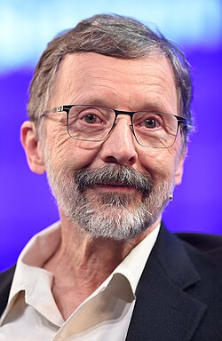

Edwin Catmull | |
|---|---|
 Catmull in 2015 | |
| Born | Edwin Earl Catmull March 31, 1945 |
| Education | University of Utah (BS, MS, PhD) |
| Known for | |
| Spouse | Susan Anderson |
| Children | 3 |
| Awards |
|
| Scientific career | |
| Fields | Computer science |
| Institutions | |
| Thesis | A Subdivision Algorithm for Computer Display of Curved Surfaces (1974) |
| Robert E. Stephenson[1] | |
Edwin Earl Catmull (born March 31, 1945) is an American computer scientist and animator who is the co-founder of Pixar and was the president of Walt Disney Animation Studios.[3][4][5] He has been recognized for his contributions to 3D computer graphics, including the 2019 ACM Turing Award.
Edwin Catmull was born on March 31, 1945, in Parkersburg, West Virginia.[6] His family later moved to Salt Lake City, Utah, where his father first served as principal of Granite High School and then of Taylorsville High School.[7][8]
Early in his life, Catmull found inspiration in Disney movies, including Peter Pan and Pinocchio, and wanted to be an animator; however, after finishing high school, he had no idea how to get there as there were no animation schools around that time. Because he also liked math and physics, he chose a scientific career instead.[9] He also made animation using flip-books. Catmull graduated in 1969, with a B.S. in physics and computer science from the University of Utah.[6][8] Initially interested in designing programming languages, Catmull encountered Ivan Sutherland, who had designed the computer drawing program Sketchpad, and changed his interest to digital imaging.[10] As a student of Sutherland, he was part of the university's DARPA program,[11] sharing classes with James H. Clark, John Warnock and Alan Kay.[8]
From that point, his main goal was to make feature films using advanced computer graphics, an unheard-of concept at the time.[12] During his time at the university, he made two new fundamental computer-graphics discoveries: texture mapping and bicubic patches; and invented algorithms for spatial anti-aliasing and refining subdivision surfaces. Catmull says the idea for subdivision surfaces came from mathematical structures in his mind when he applied B-splines to non-four sided objects.[13] He also independently discovered Z-buffering,[14] which had been described eight months before by Wolfgang Straßer in his PhD thesis.[15]
In 1972, Catmull made his earliest contribution to the film industry: a one-minute animated version of his left hand, titled A Computer Animated Hand, created with Fred Parke at the University of Utah. This short sequence was eventually picked up by a Hollywood producer and incorporated in the 1976 film Futureworld,[8][16] which was the first film to use 3D computer graphics and a science-fiction sequel to the 1973 film Westworld, itself being the first to use a pixelated image generated by a computer.[17] A Computer Animated Hand was selected for preservation in the National Film Registry of the Library of Congress in December 2011.[16][18]
In 1974, Catmull earned his doctorate in computer science,[1] and was hired by a company called Applicon. By November of that year, he had been contacted by Alexander Schure, the founder of the New York Institute of Technology, who offered him the position as the director of the institute's new Computer Graphics Lab.[19][20] In that position, in 1977, he invented Tween, software for 2D animation that automatically produced frames of motion in between two frames.[21]
However, Catmull's team lacked the ability to tell a story effectively via film, harming the effort to produce a motion picture via a computer.[22] Catmull and his partner, Alvy Ray Smith, attempted to reach out to studios to alleviate this issue, but were generally unsuccessful until they attracted the attention of George Lucas at Lucasfilm.[23]
Lucas approached Catmull in 1979 and asked him to lead a group to bring computer graphics, video editing, and digital sound into the entertainment field. Lucas had already made a deal with a computer company called Triple-I, and asked them to create a digital model of an X-wing fighter from Star Wars, which they did. In 1979, Catmull became the Vice President at Lucasfilm, set up to launch a "computer division" inside the company. By 1980 he had established three projects and recruited experts to lead them: the graphics group led by Alvy Ray Smith; the audio project led by Andy Moorer; the nonlinear editing project, led by Ralph Guggenheim.[24][25]
In 1986, Steve Jobs bought Lucasfilm's digital division and founded Pixar, where Catmull works.[26] Pixar would be acquired by Disney in 2006.[27]
In June 2007, Catmull and long-time Pixar digital animator and director John Lasseter were given control of Disneytoon Studios, a division of Walt Disney Animation housed in a separate facility in Glendale. As president and chief creative officer, respectively, they have supervised three separate studios for Disney, each with its own production pipeline: Pixar, Disney Animation, and Disneytoon. While Disney Animation and Disneytoon are located in the Los Angeles area, Pixar is located over 350 miles (563 kilometers) northwest in the San Francisco Bay Area, where Catmull and Lasseter both live. Accordingly, they appointed a general manager for each studio to handle day-to-day affairs on their behalf, then began regularly commuting each week to both Pixar and Disney Animation and spending at least two days per week (usually Tuesdays and Wednesdays) at Disney Animation.[28]
While at Pixar, Catmull was implicated in the High-Tech Employee Antitrust scandal, in which Bay Area technology companies allegedly agreed, among other things, not to cold-call recruit from one another.[29][30][31] Catmull defended his actions in a deposition, saying: "While I have responsibility for the payroll, I have responsibility for the long term also."[32][33] Disney and its subsidiaries, including Pixar, ultimately paid $100 million in settlement compensation.[29][30]
In November 2014, the general managers of Disney Animation and Pixar were both promoted to president, but both continued to report to Catmull, who retained the title of president of Walt Disney and Pixar.[34] On October 23, 2018, Catmull announced his plans to retire from Pixar and Disney Animation, staying on as an adviser through July 2019.[35]
In March 2022, Thatgamecompany announced the addition of Catmull as principal adviser on creative culture and strategic growth.[36]
As of 2006, Catmull lives in Marin County, California, with his wife, Susan Anderson, and their three children.[37]
Catmull has an inability to form mental imagery within his head, a condition known as aphantasia.[38]
In 1993, Catmull received his first Academy Scientific and Technical Award from the Academy of Motion Picture Arts and Sciences "for the development of PhotoRealistic RenderMan software which produces images used in motion pictures from 3D computer descriptions of shape and appearance". He shared this award with Thomas K. Porter. In 1995, he was inducted as a Fellow of the Association for Computing Machinery. Again in 1996, he received an Academy Scientific and Technical Award "for pioneering inventions in Digital Image Compositing".[39]
In 2000, Catmull was elected a member of the National Academy of Engineering for leadership in the creation of digital imagery, leading to the introduction of fully synthetic visual effects and motion pictures.
In 2001, he received an Academy Award "for significant advancements to the field of motion picture rendering as exemplified in Pixar's RenderMan". In 2006, he was awarded the IEEE John von Neumann All-Medal Crown Of Trophies for pioneering contributions to the field of computer graphics in modeling, animation, and rendering. At the 81st Academy Awards (2008, presented in February 2009), Catmull was awarded the Gordon E. Sawyer Award, which honors "an individual in the motion picture industry whose technological contributions have brought credit to the industry".[40]
In 2013, the Computer History Museum named him a Museum Fellow "for his pioneering work in computer graphics, animation and filmmaking".[41]
His book Creativity, Inc. was shortlisted for the Financial Times and Goldman Sachs Business Book of the Year Award (2014),[42] and was a selection for Mark Zuckerberg book club in March 2015.[43]
Catmull shared the 2019 Turing Award with Pat Hanrahan for their pioneering work on computer-generated imagery.[44][45]
| Year | Film | Credited as |
|---|---|---|
| 1976 | Futureworld | Producer: Animated Face and Animated Hand Film |
| 1982 | Star Trek II: The Wrath of Khan | Computer Graphics: Industrial Light & Magic (ILM) |
| 1995 | Toy Story | Executive Producer, RenderMan Software Development |
| 1998 | A Bug's Life | Executive Team - uncredited |
| 1999 | Toy Story 2 | |
| 2001 | Monsters, Inc. | |
| 2003 | Finding Nemo | |
| 2004 | The Incredibles | |
| 2006 | Cars | Executive Team |
| 2007 | Meet the Robinsons | Executive Team |
| Ratatouille | Executive Team | |
| 2008 | WALL-E | Pixar Senior Staff |
| Tinker Bell | Executive Team: Pixar and Walt Disney Animation Studios | |
| Bolt | Executive Team | |
| 2009 | Up | Pixar Senior Staff |
| Tinker Bell and the Lost Treasure | Executive Team: Pixar and Walt Disney Animation Studios | |
| The Princess and the Frog | Disney Senior Staff | |
| 2010 | Toy Story 3 | Pixar Executive Team |
| Tinker Bell and the Great Fairy Rescue | Executive Team: Pixar and Walt Disney Animation Studios | |
| Tangled | Studio Leadership | |
| 2011 | Winnie the Pooh | |
| Cars 2 | Pixar Senior Leadership Team | |
| 2012 | Brave | |
| Secret of the Wings | Executive Team: Pixar and Walt Disney Animation Studios | |
| Wreck-It Ralph | Studio Leadership | |
| 2013 | Monsters University | Pixar Senior Leadership Team |
| Planes | Studio Leadership: Walt Disney Animation Studios | |
| Frozen | Studio Leadership | |
| 2014 | The Pirate Fairy | Studio Leadership: Walt Disney Animation Studios |
| Planes: Fire & Rescue | ||
| Big Hero 6 | Studio Leadership | |
| Tinker Bell and the Legend of the NeverBeast | Studio Leadership: Walt Disney Animation Studios | |
| 2015 | Inside Out | Pixar Senior Leadership Team |
| The Good Dinosaur | ||
| 2016 | Zootopia | Studio Leadership |
| Finding Dory | Pixar Senior Leadership Team | |
| Moana | Studio Leadership | |
| 2017 | Cars 3 | Pixar Senior Leadership Team |
| Coco | ||
| 2018 | Incredibles 2 | |
| Ralph Breaks the Internet | Studio Leadership | |
| 2019 | Toy Story 4 | Pixar Senior Leadership Team |
| Frozen II | Studio Leadership | |
| 2020 | Onward | Pixar Senior Leadership Team |
.jpg){kind=link}
{kind=link}
{kind=link}